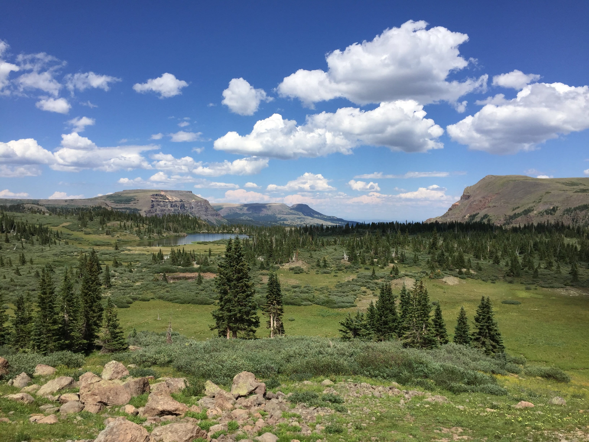
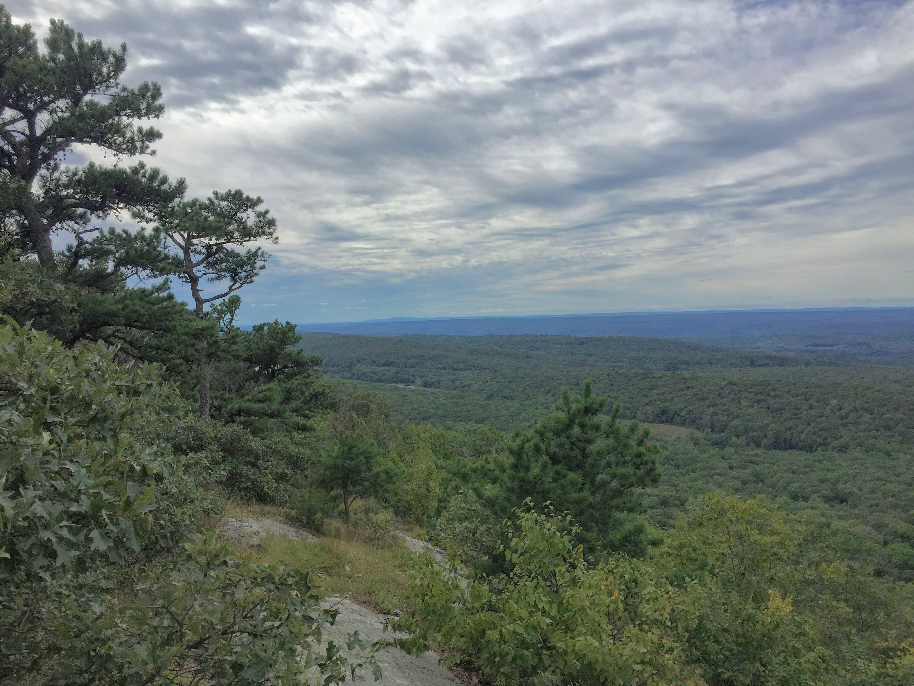
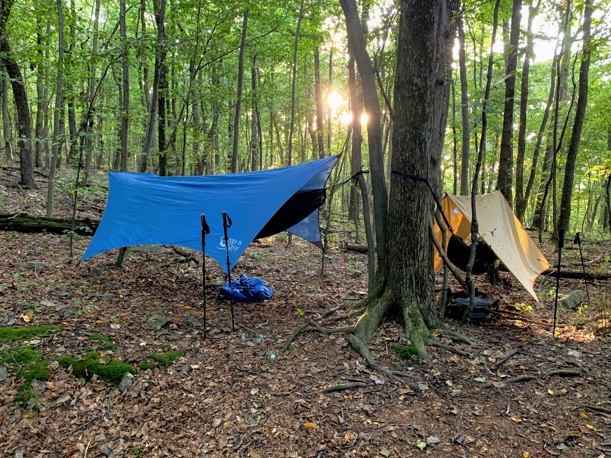
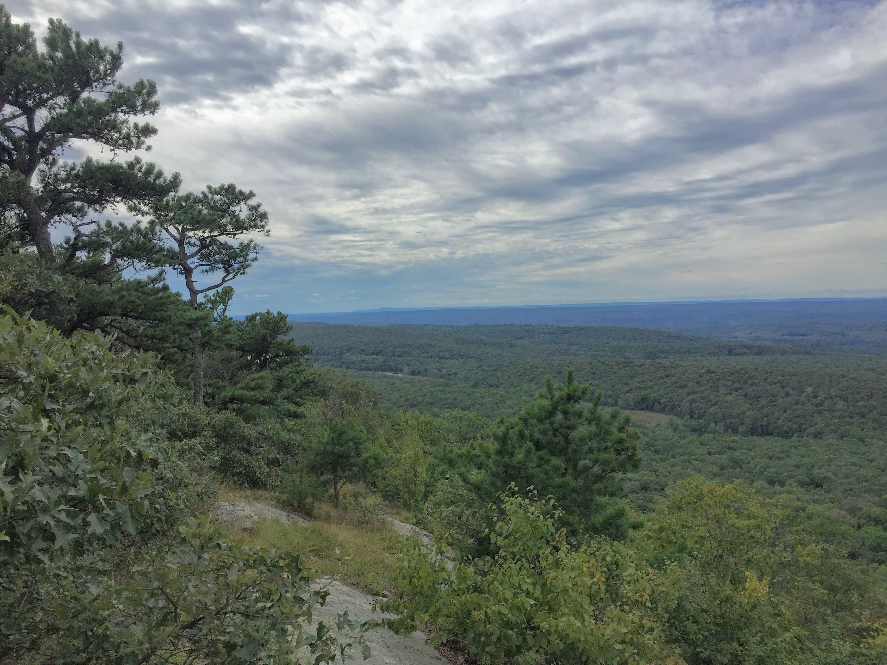
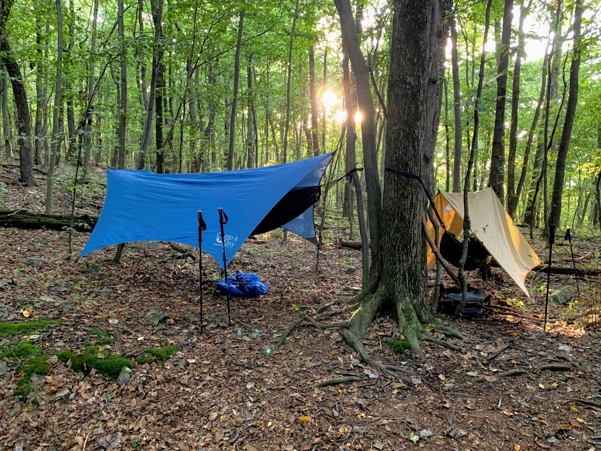

Recent stories...

 



Crossing the Devil's Causeway in the Flat Tops Wilderness
We balanced across a narrow rock scramble on the final day of a trek across the high plateau of the Flat Tops Wilderness in Colorado.
Read more...
An Amazing View From Unique Rock Formations
Weather forced a change of plans, but the view from the vistas in Colorado's Lost Creek Wilderness was worth it!
Read more...
Grizzly Bear Encounter in the Canadian Rockies
A grizzly bear and our backpacking group crossed paths during a 14 day trek through Jasper and Banff National Parks.
Read more...
Weekend Hike to the Mountains of Northern New Jersey
We carried ultralight pack setups to the ridgeline fire tower and set up hammocks in a minimalist mountainside camp.
Read more...
Hammocks and Campfires in the Appalachian Mountains
We did an out-and-back hike to a vista and a quiet camp site during an escape to the mountains of central Pennsylvania.
Read more...
Join our community
Subscribe to our mailing list to get updates on backingpacking adventures!